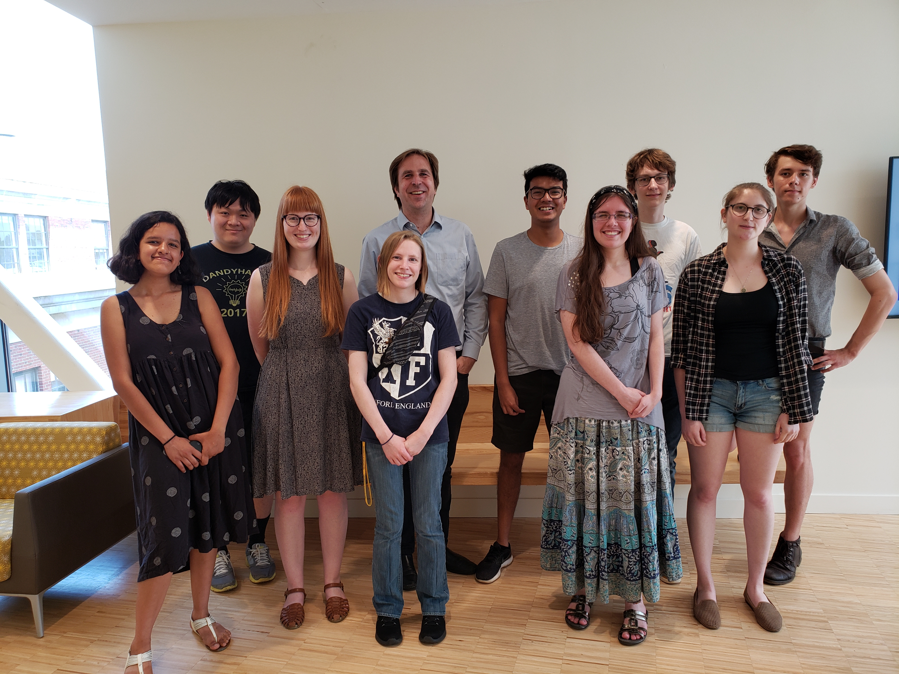

<center>
Hello and welcome to our lab webpage! Work at the Quantitative Semantics Lab develops tools and methodologies to study the relation between grammar and meaning across large amounts of language data.</center>

<figure>
    
    <figcaption>The QSL lab group, summer 2019</figcaption>
  </figure>
  <hr style="width:70%" color="black">
